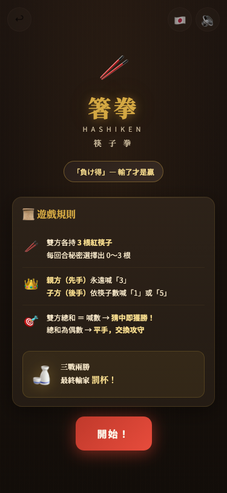

維醺志士 — 三款高知飲酒遊戲的 AI 協作開發紀錄
受虎航邀請前往日本高知縣參訪酒造與祭典飲酒文化後，我們把三款當地獨有的座敷遊戲做成了手機 Web App，讓萬華世界的客人也能體驗正宗的土佐飲酒文化。
為什麼要做這件事
萬華世界受虎航邀請，到日本高知縣參訪酒造與當地的祭典飲酒文化。高知是日本少數保留了大量傳統「座敷遊戲」（宴席飲酒遊戲）的地方——這些遊戲幾百年來都是在榻榻米上、圍著酒桌玩的。
回來之後我們就想：能不能把這些獨特的飲酒文化帶回萬華世界？讓客人在我們的居酒屋裡，用一支手機就能體驗？
目標很明確：
- 環境限制：居酒屋昏暗、吵雜，玩家可能已經喝醉了，介面要大、操作要簡單
- 語言需求：客人有台灣人也有日本人，需要中日雙語
- 離線可用：居酒屋 Wi-Fi 不穩定，要能離線玩
- 零學習成本：拿起手機、點開就玩，不需要下載 App
三款遊戲
我們挑了三款最有代表性的高知座敷遊戲：
| 遊戲 | 玩法 | 人數 | 手機使用方式 |
|---|---|---|---|
| 可杯（Bekuhai） | 轉動獨樂（陀螺），指向誰誰就用指定的杯子喝酒。天狗杯、火男杯、阿龜杯各有不同喝法 | 4～8 人 | 手機平放桌上，大家圍著看 |
| 菊花杯（Kikuhai） | 俄羅斯輪盤式翻杯，翻到菊花就要罰酒。翻越多杯、罰越多杯 | 不限 | 手機推到不同人面前翻杯 |
| 箸拳（Hashiken） | 雙方各出 0～3 根筷子，猜中總數的人贏。三戰兩勝，輸家罰杯 | 1 人 vs AI | 一人手持手機對戰 AI |
三款遊戲的使用模式完全不同——有圍著看的、有傳來傳去的、有一個人拿著打的——但我們讓它們共用同一套技術架構。
技術選型
| 工具 / 技術 | 選的理由 |
|---|---|
| 單一 HTML 檔案（inline CSS + JS） | 不需要 build 工具，一個檔案搞定一個遊戲，改完 push 就部署 |
| Google Fonts（Noto Serif JP + Noto Sans JP + Inter） | 日文標題用襯線體、UI 用無襯線體、數字用等寬 Inter |
| Web Speech API（SpeechSynthesis） | 語音播報台詞，支援 ja-JP 和 zh-TW 雙語 |
| Web Audio API | 按鈕音效用 oscillator 合成，不需要額外音檔 |
| HTML Audio + MP3 | 背景音樂用真實錄音的 MP3，三款遊戲共用曲庫 |
| CSS Custom Properties | 統一的居酒屋深色主題，跨遊戲一致 |
| PWA（manifest.json + Service Worker） | 可加入主畫面、離線快取，居酒屋環境必備 |
| localStorage | 語言偏好、音量設定、教學完成狀態，跨遊戲共用 |
| Umami Cloud | 數據追蹤（開局/結束/BGM 切換），免費、不用 Cookie、隱私友善 |
| GitHub + Vercel | Push 到 GitHub 自動部署，零設定 |
推進方式
可杯是最先開發的，所有技術決策都在這裡定下來。這款遊戲經歷了最多次迭代：
- 圓桌俯瞰 UI：木紋背景、圓形座墊排列、真實杯子和陀螺 PNG 圖片
- 語音系統：每種杯型 8 句隨機語音，有維醺志士梗、地獄梗、公開處刑台詞
- Q 版真人頭像：8 張夥伴的 cute 版頭像取代 emoji，點擊可放大搖頭晃腦
- MP3 BGM：4 首背景音樂（健身操 + 月夜思鄉 + 夏日廟會 + 祭典夜晚）
- 三段音量控制：循環切換，跨遊戲共用
可杯確立了「怎麼做音頻」「怎麼做 I18N」「怎麼做 PWA」的所有模式。
菊花杯的 UI 和玩法跟可杯完全不同（翻杯子 vs 轉陀螺），但底層的音頻系統、語言切換、音量控制都直接沿用可杯的模式。新的挑戰是：
- 翻杯動畫：CSS 3D 翻轉效果
- 緊張感營造：語音節奏控制，翻杯後要等語音講完才能繼續
- 多種模式：6/9/12/15 杯四種難度
箸拳是三款中規則最複雜的，而且是唯一需要 AI 對手的遊戲。這款經歷了一次大改版：
- 刪掉猜拳流程：原本用猜拳決定先後手，簡化成隨機分配，砍掉約 150 行程式碼
- 視覺化教學：3 步驟互動教學 overlay，用 emoji 圖解取代文字規則
- AI 角色「大將」：6 類情境 × 5 句台詞 × 中日雙語 = 30 句個性化對話
- 語音播報：大將的台詞不只顯示在氣泡裡，還會用語音說出來
後期為了統一體驗，我們回頭把三款遊戲都加上了：
- 三段音量控制（取代原本的靜音開關）
- 漣漪效果（所有按鈕按下去有視覺回饋）
- CTA 按鈕音效（點擊主要按鈕有 click 聲）
- Umami 數據追蹤（每款遊戲追蹤開局/結束/BGM 切換）
AI 怎麼幫我的
整個專案我負責的是「決定要做什麼」和「判斷做出來的東西好不好」，AI 負責「怎麼做」和「寫所有程式碼」。
- 所有 HTML/CSS/JS 程式碼
- 動畫效果與音頻系統
- PWA 離線與 Service Worker
- I18N 雙語系統
- Umami 數據追蹤埋點
- 台詞初版創作
- 遊戲選哪三款、怎麼玩
- UI 風格與視覺方向
- 台詞語氣與角色個性
- 功能取捨（哪些該砍）
- 品質把關與退回重做
- 部署與實際測試
這個專案中最有效的 AI 使用策略是「用既有作品當規格書」：
- 可杯做完後，我讓 AI 先讀懂可杯的所有程式碼
- 做菊花杯時，我只需要說「音頻系統照可杯的模式來」
- 做箸拳時，我說「先讀可杯和菊花杯，理解共用的功能模式，再開始」
這比逐條描述需求快非常多。AI 不只複製功能，還能主動對齊細節（例如音量的 duck 值、localStorage 的 key 命名、Umami 事件的欄位格式）。
箸拳改版計畫的初版，AI 角色的台詞太少、太無聊。我退回計畫，要求「延續可杯/菊花杯那種諷刺、地獄梗、維醺志士笑話的風格」。AI 回去讀了前兩款遊戲的所有語音台詞，理解語氣後重新創作了 30 句台詞——這是整個專案中品質提升最大的一次修正。
踩到的坑，讓我更懂的事
最早的箸拳用 Web Audio API 的 oscillator 合成三味線風格的背景音樂，但聽起來很機械。改用 MP3 後音質天差地別，而且三款遊戲可以共用同一批音樂檔案。
菊花杯翻杯後的語音，一開始是自動接著播放，但語音還沒講完就被下一段截斷。後來加了「下面一位～」按鈕，讓玩家控制節奏，語音才不再重疊。
箸拳的規則（親方永遠喊 3、子方依筷子數喊 1 或 5、偶數平手交換攻守）用文字解釋很抽象。改成 emoji 圖解 + 3 步驟互動教學後，理解難度大幅降低。
箸拳原本有猜拳決定先後手的流程，看似合理但讓玩家多等 10 秒。改成隨機分配後，刪掉 150 行程式碼，玩家更快進入正題。
最終樣貌
三款遊戲已全部上線，部署在 Vercel：
- 可杯：木紋圓桌俯瞰、真實杯子/陀螺 PNG、Q 版頭像座墊、語音台詞系統、4 首 MP3 BGM
- 菊花杯：6/9/12/15 杯模式、CSS 3D 翻杯動畫、緊張感語音、翻杯節奏控制
- 箸拳：視覺化規則卡片、3 步驟互動教學、AI 角色「大將」30 句台詞、語音播報
三款遊戲共用：居酒屋深色主題、三段音量控制、中日雙語、漣漪效果、CTA 音效、PWA 離線、Umami 數據追蹤。
首頁是一個遊戲選單，三張卡片排列，點擊即可進入對應遊戲。

- 菊花杯需要做一次像箸拳這樣的 UI 大改版（視覺規則卡片、教學流程）
- 三款遊戲的 iPad 排版都需要更精緻的調整
- 大將的 emoji 頭像可以換成 Q 版手繪頭像，跟可杯的玩家頭像風格一致
- 可以考慮接 Supabase 做更細緻的遊戲數據記錄
Takeaway
當你開發系列性的產品，第一款最花時間，因為要建立所有技術模式。但從第二款開始，你只需要讓 AI 先讀懂第一款的程式碼，再說「照這個模式來」，開發速度會呈指數級加快。三款遊戲從第一款的反覆迭代到第三款的一次到位，效率差距非常明顯。
台詞、角色個性這類創意內容，最有效的方式是「提供風格範例 + 退回重做」。比起從零描述你想要的語氣，不如給 AI 看一個已經做好的範例，說「照這個風格來」，然後在初版上反覆修正。
這個模式適用於任何系列性的產品：做第二個分店的菜單時參考第一個、做新活動頁面時參考上一次的。前提是第一個範例的品質要夠好，而且後續產品的架構跟範例相似。
起手式 1：「請先讀完這個檔案，理解裡面的功能模式。接下來我要做一個新的，請按照同樣的模式來。」
起手式 2：「這是目前的半成品，哪些部分應該刪掉、哪些應該保留？先幫我規劃改版的順序：先刪再加。」